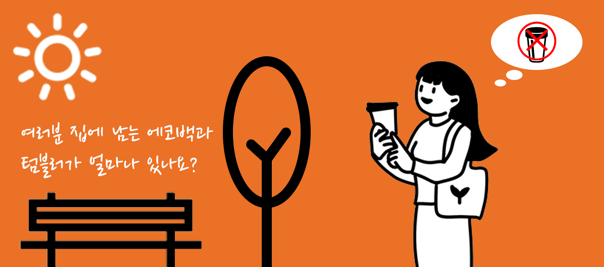

5R 원칙
쓰레기를 줄이는 가장 효과적인 방법은 다음과 같은 다섯 가지 R단계를 따르는 것입니다.
1. 필요하지 않은 것을 거절하기 (Refuse)
2. 필요하며 거절할 수 없는 것은 줄이기 (Reduce)
3. 소비하면서 거절하거나 줄일 수 없는 것은 재사용하기 (Reuse)
4. 거절하거나 줄이거나 재사용할 수 없는 것은 재활용하기 (Recycle)
5. 나머지는 썩히기 (Rot)
2. 필요하며 거절할 수 없는 것은 줄이기 (Reduce)
3. 소비하면서 거절하거나 줄일 수 없는 것은 재사용하기 (Reuse)
4. 거절하거나 줄이거나 재사용할 수 없는 것은 재활용하기 (Recycle)
5. 나머지는 썩히기 (Rot)
리바운드 효과
제로 웨이스트 운동 속에서 환경을 위한 행위가 오히려 환경에 악영향을 미치는 리바운드 효과가 감지된답니
다.다회용품을 오래 사용하지 않거나 쓰지 않고 보관만 할 경우 일회용품보다 몇 배 혹은 몇백 배의 환경오염
으로 이어질 수 있습니다.

제로 웨이스트란 모든 제품이 재사용될 수 있도록 장려하
며, 폐기물을 방지하는 데 초점을 맞춘 원칙을 말한다. 즉,
쓰레기 배출량을 줄여 낭비가 ‘0’이 되도록 하는 것입니
다. 모두 제로웨이스트를 삶에 적용시켜 함께 지구보호
챌린지에 참여하세요.
-
SERVICES
- 제로웨이스트
- 5R원칙
- 보도자료
-
CONTACT
- Gyeonggi-do, galmaedong
- qordick12@gmail.com
- 010 - 9991 - 6471
-
CONTACT